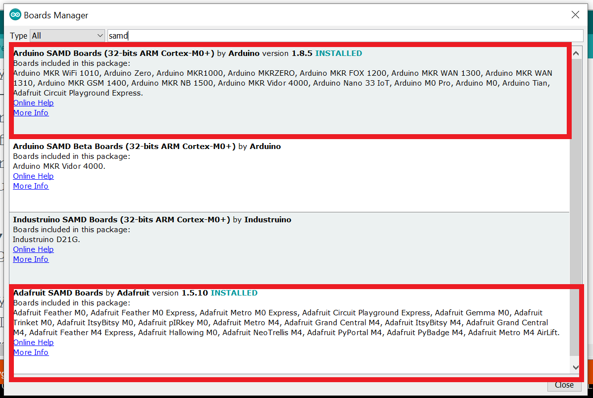

Arduino IDE with Circuit Playground Express
Inside of 'preferences' menu
copy and paste this link: https://adafruit.github.io/arduino-board-index/package_adafruit_index.json

Tools -> Board -> Boards Manager
Search for 'SAMD'
Install these two libraries
